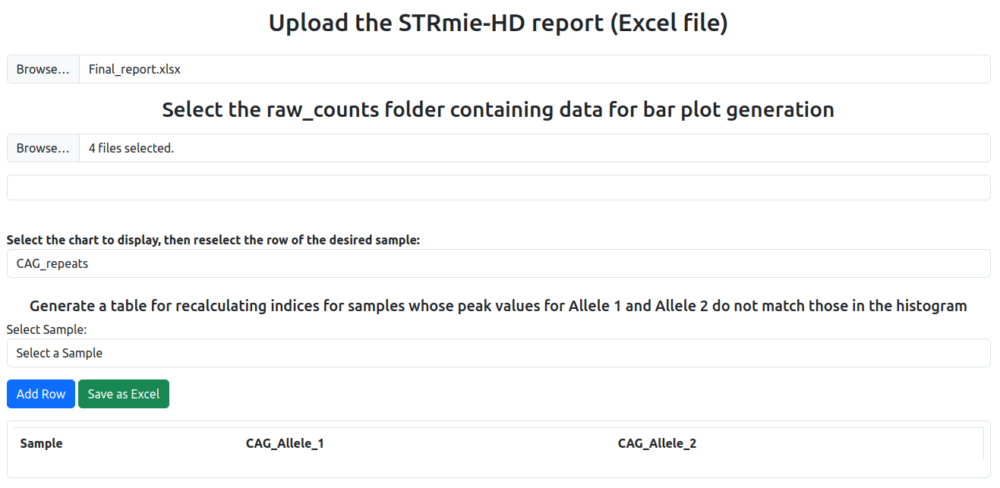
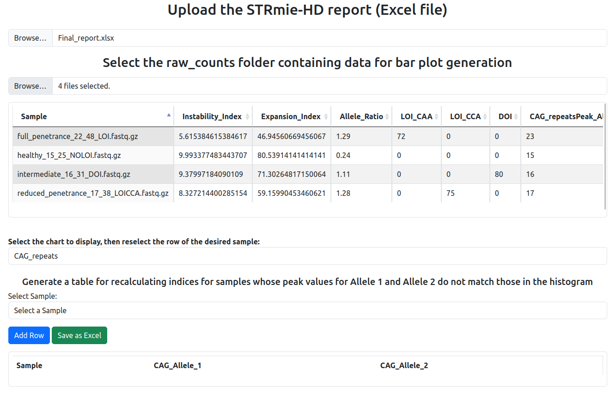
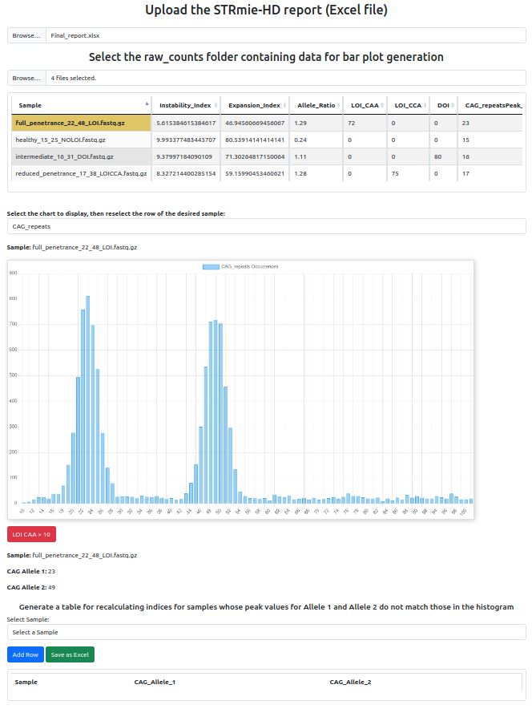

Outputs
Generated Output Files
report.html→ interactive HTML report for manual inspection and allele peak correction.Final_report.xlsx→ consolidated Excel report including definitive allele peaks, CCG counts per allele, instability/expansion indices, LOI/DOI flags, and resolved warnings.raw_counts/→ per-sample CSV files with raw read-level counts and annotations (CAG, CCG, LOI/DOI, sequence). These files are used internally to generate histograms in the HTML report, but can also be inspected manually.report_0.xlsx→ draft Excel report generated before CCG assignment and warning resolution. It contains preliminary peak calls, indices, and LOI/DOI values (intermediate step before producing the final report).
If --cag_graph or --ccg_graph are enabled, additional subdirectories are created:
CAG_graphs/,CCG_alleles_graphs/→ per-sample histograms.warning_case/,forced_graphs/→ outputs for warning samples and their forced resolution.
Warning samples and forced resolution If a sample shows a non-canonical histogram (e.g., unclear or noisy peaks), STRmie-HD flags it as warning.
By default, the tool retries a forced peak search (
forced_graphs/), applying a broader scan for candidate peaks.If the
--cwtoption is enabled, STRmie-HD additionally applies wavelet-based peak detection (scipy.signal.find_peaks_cwt) to test multiple alternative strategies and recover allele peaks in ambiguous cases.
All forced or re-analyzed cases are saved in:
warning_case/→ plots and data for flagged samples.forced_graphs/→ results from the forced peak search.
HTML report Step by Step workflow
The interactive report.html guides users through manual inspection and, if necessary, allele correction (Index_Calculation).
1) Upload the report and the raw_counts folder
Upload the Final_report.xlsx produced by the Complete Pipeline, then select the raw_counts folder containing the .csv files used to build histograms.

2) View the loaded table (before selecting a sample) After loading both inputs, the main table displays, for each sample, the metrics computed by STRmie‑HD and the detected allele peaks.

3) Select a sample to display the histogram and flags Click on a row to display the corresponding histogram (bar plot). STRmie‑HD automatically highlights LOI/DOI flags if thresholds are exceeded (e.g., LOI CAA > 10).

Generate a table for recalculating indices (Index_Calculation mode)
This mode is designed for cases where automatic allele calling requires manual refinement. While reviewing the interactive HTML report, users may determine that the automatically detected allele peaks are inaccurate. Through the HTML interface, users can: Visually explore CAG and CCG histograms for each sample. Fill in the corrected values for CAG_Allele_1 and CAG_Allele_2 in the table Export a Excel table containing the revised allele definitions.
The Index_Calculation mode uses this corrected table as input to recompute all instability and expansion indices (II, EI).
How to proceed
Inspect the histogram and the reported allele peaks.
If the automatic peaks do not match the histogram, use the “Generate a table for recalculating indices…” section:
Select the sample in the dropdown.
Click Add Row, then enter in the corrected
CAG_Allele_1andCAG_Allele_2in the table.Click Save as Excel to export
CAG_data_for_recalculating_indices.xlsx.
Recompute indices with the corrected alleles:
strmie --mode Index_Calculation -f /path/to/input_dir/ -o /path/to/output_dir/ -p /path/to/CAG_data_for_recalculating_indices.xlsx
Parameters
-f /path/to/input_dir/→ same input folder used for the Complete Pipeline (for consistency of sample names/paths).-o /path/to/output_dir/→ destination folder for recalculated outputs.-p /path/to/CAG_data_for_recalculating_indices.xlsx→ curated Excel exported from the HTML report.
Outcome
Index_Calculationrecomputes II and EI using the corrected allele peaks, aligning metrics with visual evidence from histograms.